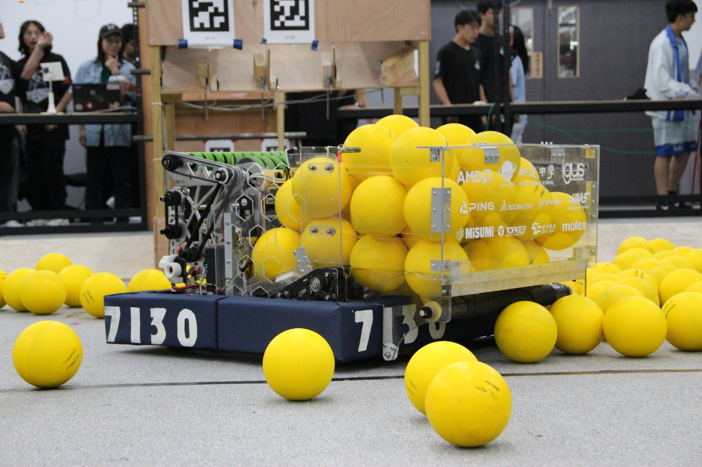
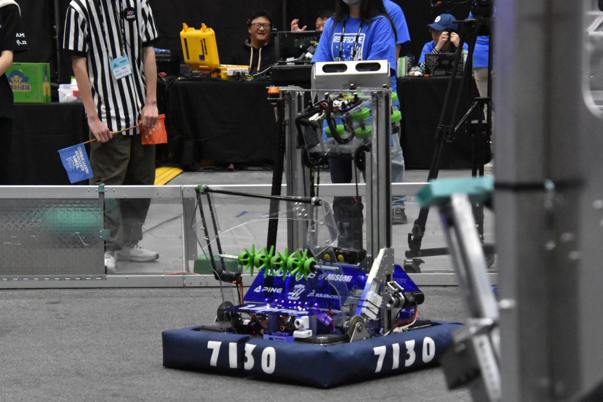
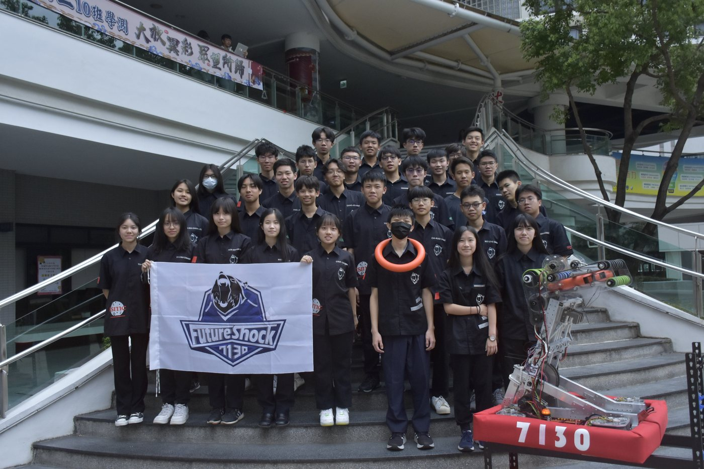
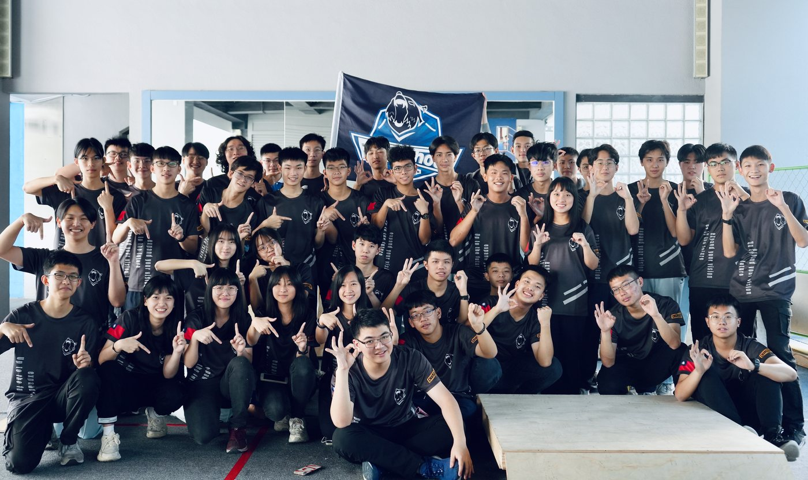
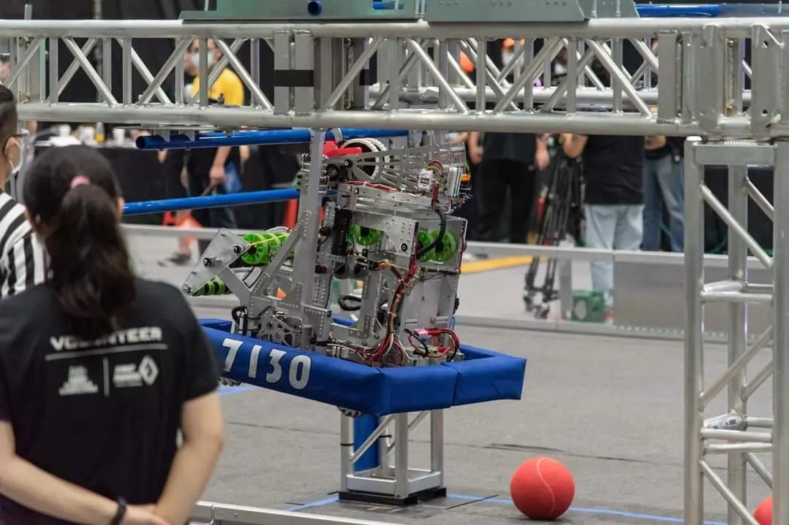
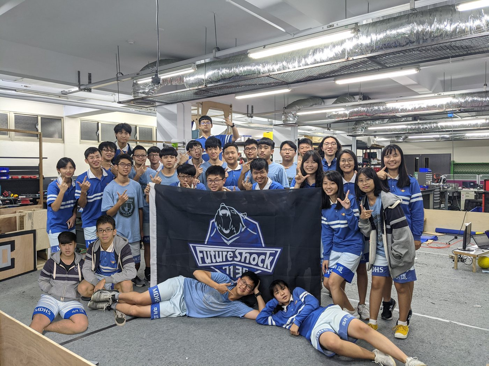
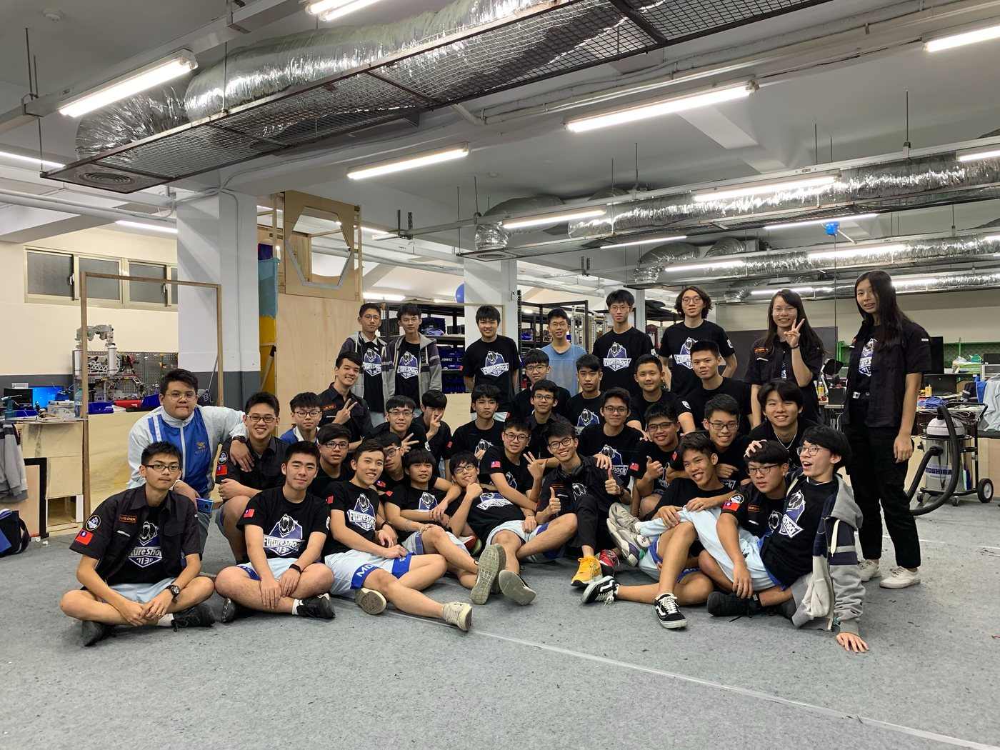
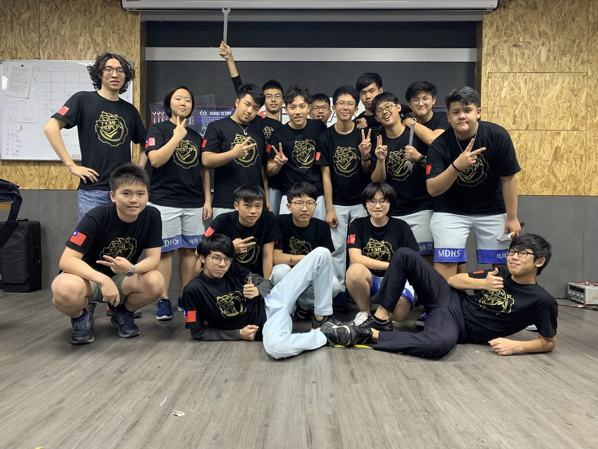
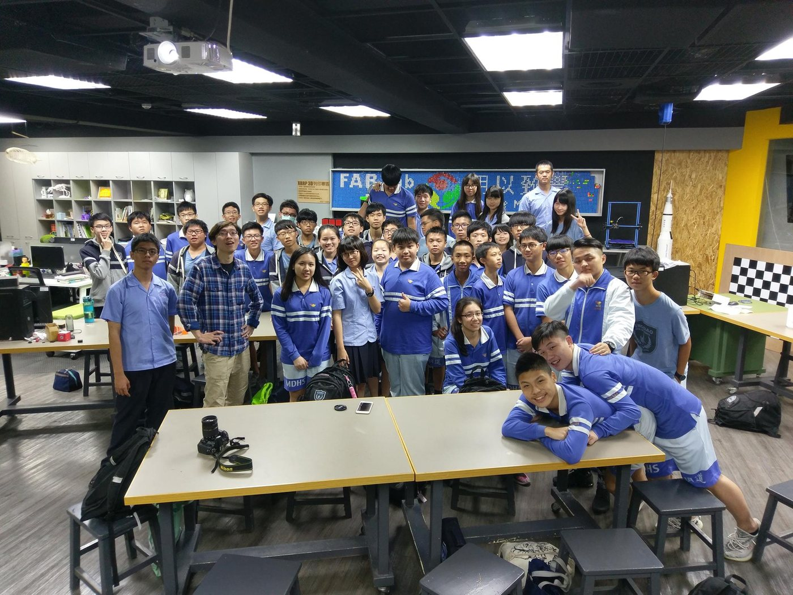

Every season, our robot is a complete engineering story: brainstorming at kickoff, strategy analysis, prototyping, iteration, and the final machine that takes the field. This archive is our digital robot book collection. 每個賽季的機器人都是一段完整的工程故事：開賽腦力激盪、策略分析、原型製作、反覆迭代，到最終登場的機器。這裡是我們的數位機器人手冊典藏。

Full robot book available. Kickoff strategy → prototypes → Alpha Bot → Beta Bot → Final Bot, plus programming and electrical design. 完整手冊已上線。開賽策略 → 原型 → Alpha Bot → Beta Bot → 最終機器人，以及程式與電路設計。
Read the 2026 robot book →閱讀 2026 機器人手冊 →
Rising All-Star & Excellence in Engineering season.Rising All-Star 與卓越工程獎賽季。
Season page →賽季頁面 →
Taiwan Playoff Champion season.台灣季後賽冠軍賽季。
Season page →賽季頁面 →
First swerve chassis; first U.S. regionals.首用 swerve 底盤；首征美國區域賽。
Season page →賽季頁面 →
Custom mecanum chassis; weekly build videos.自製麥克納姆底盤；每週製作影片。
Season page →賽季頁面 →
Judges Award amid the pandemic.疫情中榮獲評審獎。
Season page →賽季頁面 →
The season COVID-19 cancelled.被 COVID-19 取消的賽季。
Season page →賽季頁面 →
Rank 2 at Southern Cross Regional.Southern Cross 區域賽排名第 2。
Season page →賽季頁面 →
Our rookie season and first award.創隊首季與首座獎項。
Season page →賽季頁面 →Past-season pages are being digitized from our archives — full robot books will be added as they are restored. 過往賽季頁面正從隊史檔案數位化中——完整機器人手冊將陸續上線。